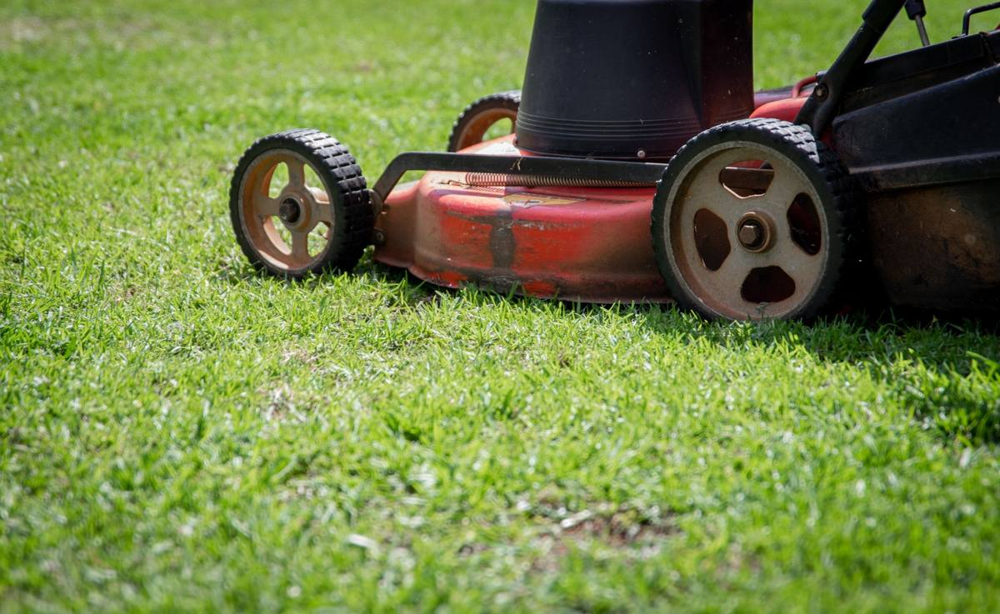

A dead mower is mostly steel, so it does not belong in a landfill and it does not belong in the alley either. We take mowers, trimmers, blowers, edgers, tillers and pressure washers on a normal run. The one thing that has to happen first is fuel and oil coming out, because those go to a city collection site rather than on a truck.

Late September into October is when this pile finally gets dealt with in North Texas. The grass slows down, the equipment corner stops being a working corner, and everybody notices there are three trimmers in it and only one of them runs.
What is in the small engine pile
It is never one mower. Once people start pulling things out of that corner, the list is usually longer than they expected.
A walk-behind mower that stopped starting. A second one kept for parts. A string trimmer with a seized head. A leaf blower somebody replaced with a battery model. An edger. A tiller that got used twice. A pressure washer with a cracked pump. A chainsaw. A generator bought during a storm year and never run since.
Then the riding mower, if there is one. That is the piece people assume is a problem and it usually is not. It is heavy and awkward, so tell us about it in advance, but a rider is a normal item to haul.
Around the edges there is the rest of it: spare decks and blades, a bag of old spark plugs, coils of trimmer line, a broken spreader, hoses, and two or three gas cans that are somebody else's problem until they are not.
What has to come out first
Fuel and oil have to be out of a machine before it goes anywhere. Old gasoline, mixed two-stroke fuel, motor oil, and whatever is in the gas cans on the shelf are all household hazardous waste. They go to a city collection program, not on a truck and never down a drain or onto the ground. TCEQ keeps a plain page on household hazardous waste that explains the category, and Allen runs its own household chemical collection program for residents. Every city up here has an equivalent.
Batteries come out separately too. A riding mower battery is a lead acid battery and most city programs and auto parts stores take those back. A cordless tool pack is a lithium battery, and a junk drawer is the wrong place to leave one of those.
Once the machine is dry and the battery is out, it is just metal and plastic and it comes out on a normal job.
Do not drain fuel into the grass or a storm drain. It is the single most common shortcut on this job and it is the one with a real cost. Gas cans and old fuel go to the city collection site, and that trip takes less time than most people assume.
Is it worth fixing or donating first
Sometimes, and it is worth ten minutes to find out before it goes on a truck.
A machine that runs, or that only needs a plug and a carburetor clean, has somewhere to go. Habitat for Humanity ReStores accept donated goods at many locations, small engine equipment included in some cases, and what any given ReStore takes varies, so call first. Fuel still has to be out before a donation center will take it.
Be honest about the ones that are not coming back, though. A mower with a bent crankshaft from hitting a stump, a two-stroke that was run on straight gas, a pressure washer with a frozen pump. Those are scrap, and holding them in a garage for another two years does not change that.
We are haulers, not small engine mechanics, and we will not pretend to know which of those a machine is. If you think a piece has real value, find that out before the crew comes.
Where a dead mower actually goes
Not to a landfill, in most cases. A mower is largely steel, and steel is one of the easiest materials there is to recycle. Aluminum decks and engine housings go the same way. The EPA's page on recycling basics and benefits covers why metal recovery is worth the separation step.
So the pile splits three ways once it is drained. Metal goes to a recycler. Anything genuinely usable goes to a donation partner. Plastic housings, cracked decks, hoses and trimmer line go out as waste. We do this sort on our end, not yours.
The same run usually picks up the rest of the yard corner, which is yard debris work: bagged clippings, a pile of limbs, old bags of soil that went hard, broken pots. If the equipment corner is in an Allen garage, the local detail on how that runs is on our page for clearing yard waste from an Allen property, and how a junk removal job runs in Allen covers the rest of it.
How the job runs
Send a photo of the corner. That is usually enough, and it saves a conversation about how many machines there are, because there are always more than the count you gave on the phone.
Say in advance if there is a rider, a generator, or anything else that two people are not simply picking up. That changes how the crew comes staffed.
Have the fuel out, or say plainly that it is not out yet. It is not a reason to cancel a job, it just changes what leaves on the truck and what goes on your list for the city collection site.
A crew looks at what is going and gives you a firm number before anything is lifted. The quote is the bill, and disposal is included. Call before noon and same afternoon is typical across the northern suburbs. When the corner is ready, tell us what needs to come out.
Frequently asked questions
Will you take a mower with gas still in it?
Tell us before we come. Fuel and oil have to be dealt with separately either way, so it is better to know in advance than to find out in the driveway.
Do you take riding mowers?
Yes. Mention it when you book so the crew comes staffed for it, and say whether it rolls or has to be dragged.
What do I do with the gas cans themselves?
Those go to your city's household chemical collection program along with the fuel in them. We will point you at the page for your city.
Does an old mower actually get recycled?
The metal does, which is most of the machine. Plastic housings, hoses and trimmer line go out as waste.
Can you take a generator?
Yes, with the same fuel rule. A generator that has sat with old gas in it needs to be drained before it goes, and the fuel goes to the city site.
The equipment corner is one of the quicker jobs we run, and it usually clears more floor than people expect. The rest of what we haul is on the services page.